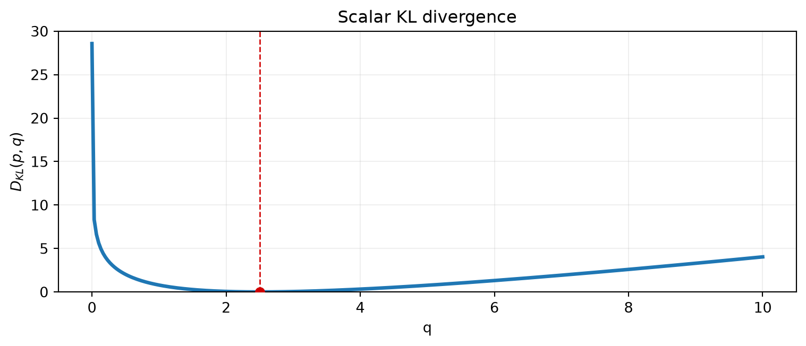
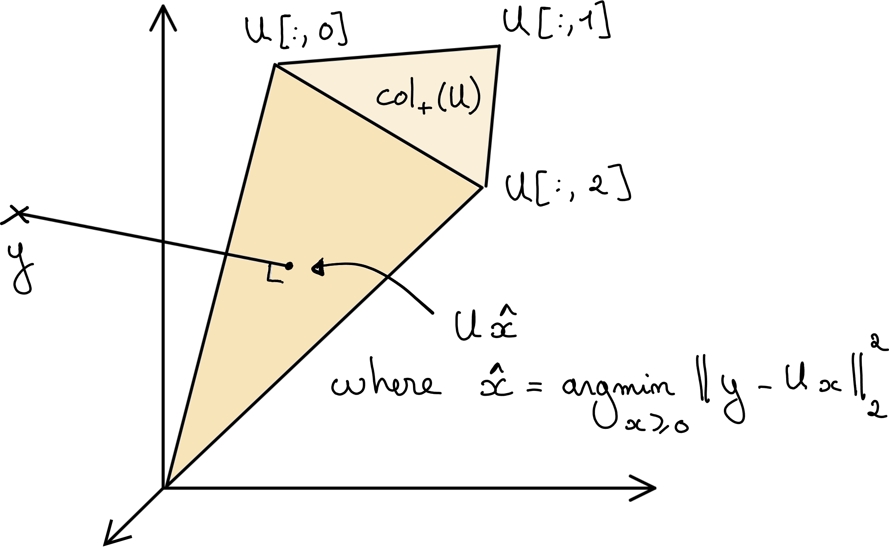
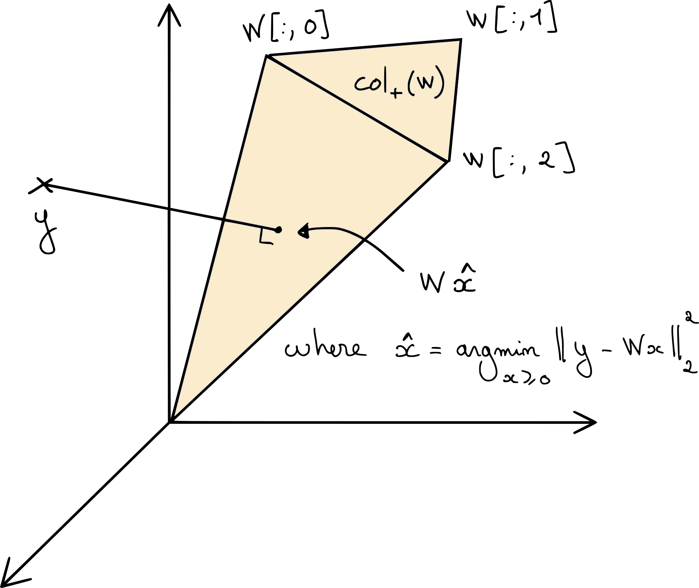
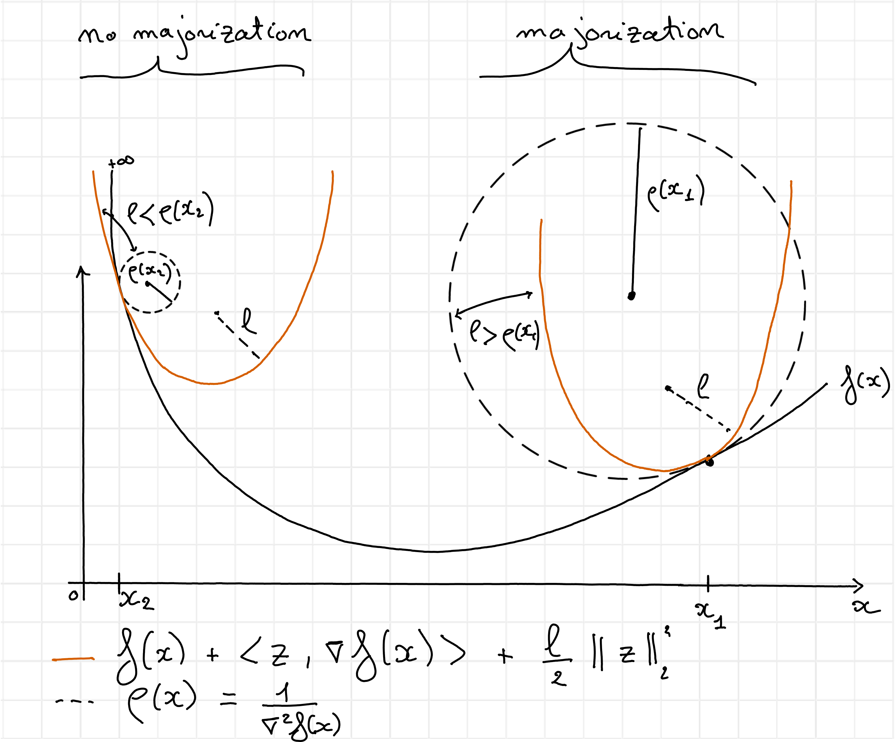
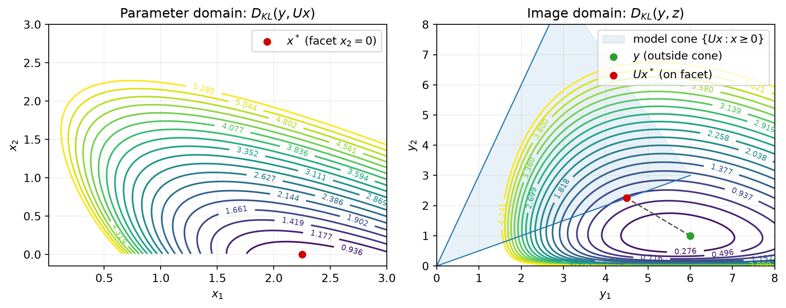
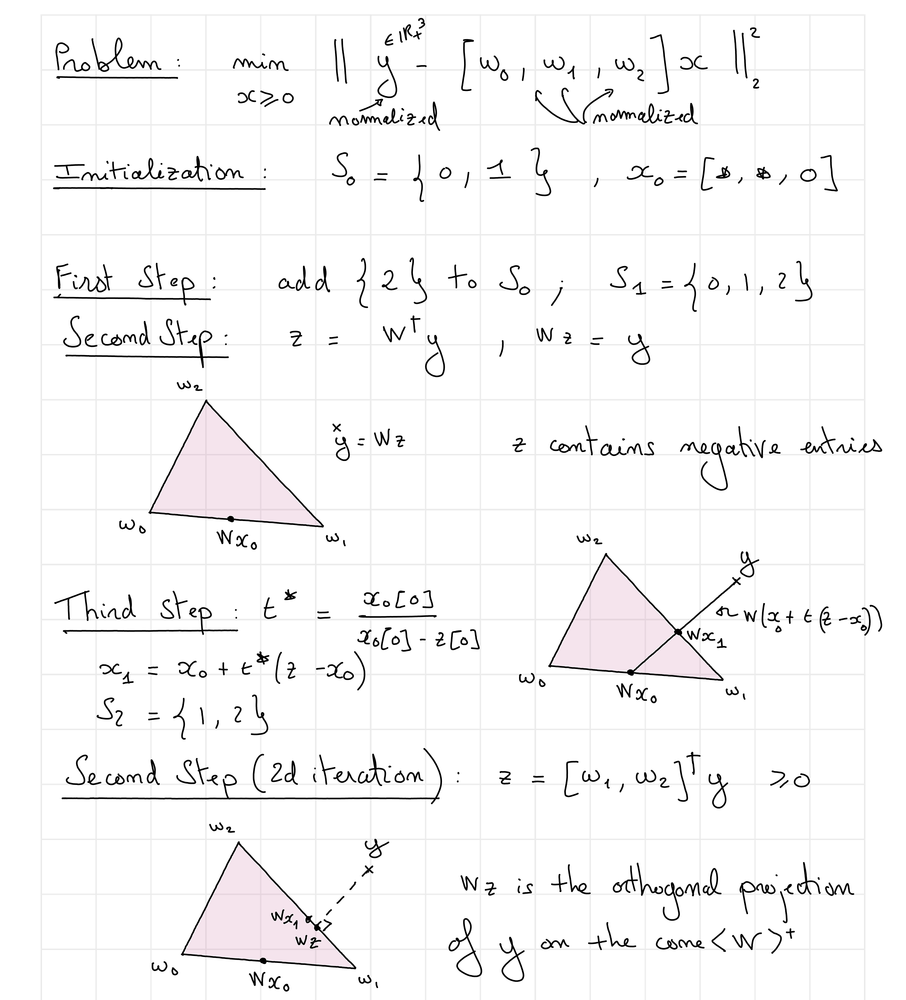
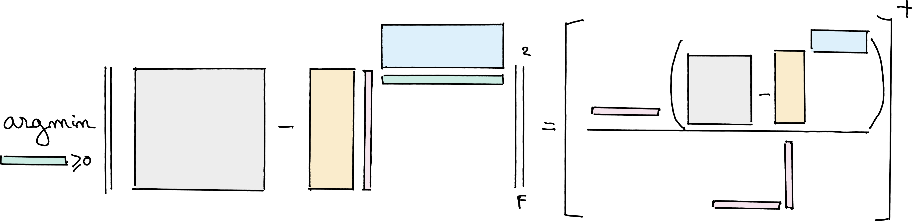
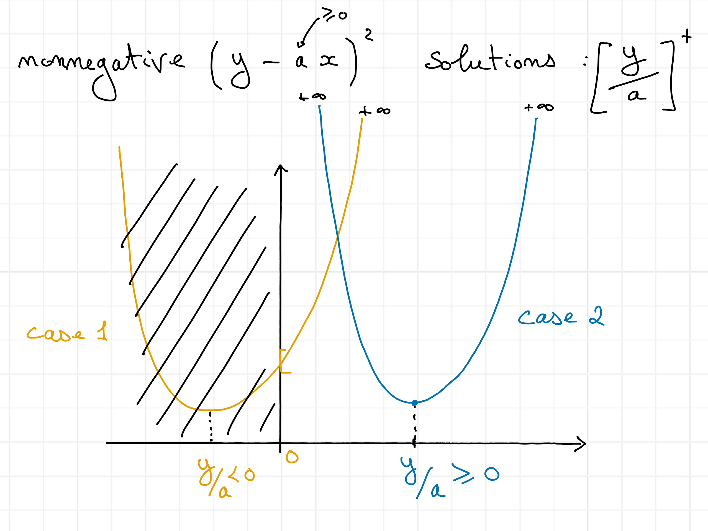
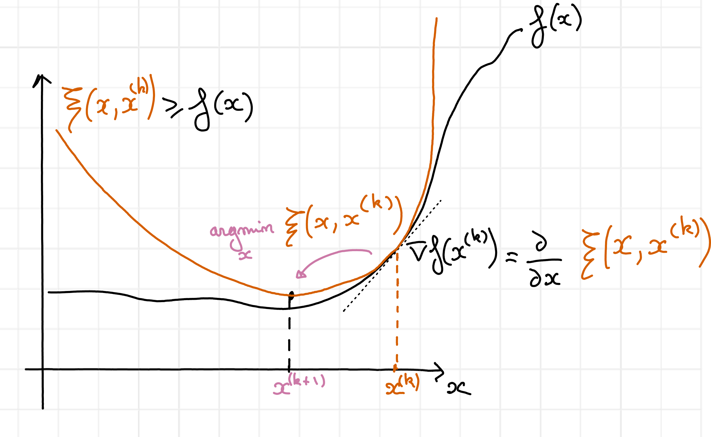

Lecture 2 - Nonnegative regression: NNLS, NNKL, and algorithms
CNRS, CREATIS, Lyon
2026-10-01
In alternating optimization,
\[ \min_{W \geq 0, H\geq 0} \|Y - WH^T\|_F^2 \]
fixing all but one factor turns a nonnegative LRA problem into a nonnegative regression problem.
\[ \min_{W \geq 0} \|Y - WH^T\|_F^2 \]
Today: understand this optimization problem and the algorithms that solve it.
The problem is separable rowwise,
\[ \| Y - WH^T \|_F^2 = \sum_{i=1}^{m} \| Y[i,:] - W[i,:]H^T\|_2^2. \]
We need to minimize a quadratic form for each rows \(W[i,:]:=x\), leading to solving \(m\) problems of the form
\[ \min_{x\geq 0} \| y - Ux \|_2^2. \]
Given observations \(y \in \mathbb{R}^m\) and a dictionary \(U \in \mathbb{R}^{m \times n}\):
\[ \min_{x \geq 0} f(y, Ux). \]
Two losses will organize the lecture:

Without constraints, least squares gives
\[ x_{\mathrm{LS}} = U^\dagger y. \]
Negative coefficients can be difficult to interpret as abundances, intensities…
Nonnegativity is an informative prior:
The nonnegative least-squares problem is
\[ \boxed{\text{NNLS:}\quad x^* \in \arg\min_{x \geq 0} \|y - Ux\|_2^2 \quad} \]
For full columns rank matrix \(U\), the projected estimate \([U^\dagger y]^+\) is generally not the NNLS solution.
Define the cone generated by the columns of \(U\):
\[ \mathcal{C}(U) = \{Ux : x \geq 0\}. \]
Then NNLS can be written as
\[ \min_{z \in \mathcal{C}(U)} \|y-z\|_2^2. \]
The reconstructed vector \(z^*=Ux^*\) is the orthogonal projection of \(y\) onto the cone.

When \(y\) lies outside the cone, its projection often lands on a lower-dimensional facet. The corresponding coefficient vector \(x^*\) is sparse.
Caution
The actual shape of the cone depends on matrix \(U\). Most of the intuition in this masterclass assumes that \(U\) is nonnegative.
The geometry gives intuition. The KKT conditions transform this intuition into a set of equations.
Consider the Lagragian
\[ \mathcal{L}(x,\lambda) = \|y-Ux\|_2^2 - \langle \lambda,x\rangle, \]
an optimal pair \((x^*,\lambda^*)\) satisfies
\[ \begin{aligned} &x^* \geq 0, \qquad \lambda^* \geq 0,\\ &\lambda^*[i]x^*[i] = 0,\\ &2U^T(Ux^*-y)-\lambda^*=0. \end{aligned} \]
These conditions separate active coefficients from inactive ones.
Let \(S = \operatorname{supp}(x^*)\) and \(r^* = y-Ux^*\).
On the support:
\[ U[:,S]^T r^* = 0. \]
Outside the support:
\[ U[:,S^c]^T r^* \leq 0. \]
So the active atoms are orthogonal to the residual.
Tip
If the optimal support is known and \(U[:,S]\) is invertible, the solution can be computed exactly!
\[ U^T[:,S]U[:,S]x^\ast = U^T[:,S]y \]
Theorem
If \(y \notin \mathcal{C}(U)\) and \(\operatorname{spark}(U)>m\), then NNLS has a unique solution with
\[ |\operatorname{supp}(x^*)| \leq m-1. \]
This is the night-sky theorem:
NNLS is simultaneously:
Its algorithms will exploit one of these three viewpoints. We will explore them in a second part of the talk.
The Euclidean loss treats absolute errors equally across the signal range.
For data with large dynamic range or count measurements:
A Poisson model gives a different data fidelity term.
\[ (100 - 101)^2 = 1\]
\[ (1-2)^2 = 1 \]
For Poisson observations (distribution of counting things),
\[ Y[i] \mid x \sim \mathcal{P}((Ux)[i]), \]
maximum likelihood leads to the generalized KL divergence
\[ D_{\mathrm{KL}}(y,z) = \sum_i y[i]\log\frac{y[i]}{z[i]} + z[i]-y[i]. \]
The nonnegative KL regression problem is
\[ \boxed{\text{NNKL:} \quad x^* \in \arg\min_{x \geq 0} D_{\mathrm{KL}}(y,Ux). \quad} \]
The scalar KL divergence is minimized at \(q=p\).
\[ D_{\mathrm{KL}}(p,q)=p\log\left(\frac{p}{q}\right)+q-p. \]
For the reference value \(p=2.5\), the curve is:

\[D_{\mathrm{KL}}(100,101) = 100\log(100/101) + 1 \approx 0.005 \]
\[D_{\mathrm{KL}}(1,2) = \log(1/2) + 1 \approx 0.31 \] \[D_{\mathrm{KL}}(2,1) = 2\log(2) - 1 \approx 0.39 \]
NNLS
\[ \|y-Ux\|_2^2 \]
NNKL
\[ D_{\mathrm{KL}}(y,Ux) \]
The KL curvature is
\[ \frac{\partial^2 D_{\mathrm{KL}}(y,z)}{\partial z^2} = \frac{y}{z^2}. \]
It becomes unbounded as \(z \to 0\).
Consequences:
KL divergence is strictly convex, but generally not strongly convex: for large \(z\), it becomes asymptotically linear.

On a known support \(S\), the NNKL KKT equation is
\[ U[:,S]^T\left(1-\frac{y}{Ux^*}\right)=0. \]

y = [6. 1. 2.], Ux* = [4.49999918 2.25000209 2.25000009], residual 1-y/(Ux*) = [-0.33333358 0.55555597 0.11111115]Here \(y\) lies outside the model cone \(\{Ux : x\geq 0\}\): solving the KKT equation on the full support \(\{1,2\}\) would give a solution violating nonnegativity, so the true projection \(Ux^*\) falls on a facet of the cone (\(x_2=0\)), leaving column 2 inactive. Even locating the solution on this facet requires solving an optimization problem.
Consider scaling a candidate reconstruction by \(\alpha\):
\[ \min_{\alpha \geq 0} D_{\mathrm{KL}}(y,\alpha Ux). \]
At the optimum,
\[ \alpha^* = \frac{\sum_i y[i]}{\sum_i (Ux)[i]}. \]
Thus any optimal solution satisfies
\[ \sum_i (Ux^*)[i] = \sum_i y[i]. \]
When columns of \(U\) sum to one, the model and data have matching marginals.
| Method | NNLS | NNKL | Main idea |
|---|---|---|---|
| Active-Set | yes | no | search for the support |
| HALS | yes | no | exact coordinate blocks |
| Multiplicative Updates | yes | yes | scaled first-order steps |
The best method depends on the shape of the regression:
If the support \(S\) were known, NNLS would reduce to
\[ \min_{x[S]} \|y-U[:,S]x[S]\|_2^2. \]
Active-Set (AS) alternates between:
With residual \(r=y-Ux\), choose the inactive atom most correlated with \(r\):
\[ j = \arg\max_{i\notin S} \langle U[:,i],r\rangle, \qquad S \leftarrow S \cup \{j\}. \]
Compute the unconstrained restricted least-squares solution
\[ z[S] = U[:,S]^\dagger y, \qquad z[S^c]=0. \]
Move from the current feasible point \(x\) toward \(z\):
\[ x \leftarrow x+t(z-x), \]
with the largest feasible step
\[ t^* = \min_{i:z[i]<0}\frac{x[i]}{x[i]-z[i]}. \]
Then go back to step 2.

Every accepted step decreases the NNLS cost.
A support is not revisited unless the optimum has been reached. Therefore AS terminates after finitely many support changes, although the worst-case number of supports is exponential.
AS is especially attractive when:
Matrix NNLS is
\[ \min_{H^T\geq 0} \|Y-WH^T\|_F^2. \]
Each column of \(H^T\) is a separate NNLS problem, potentially with a different support.
Solving restricted linear systems independently is expensive.
HALS strategy
Work on rank-one terms, alternatively.

HALS is exact alternating optimization:
Lecture 3: we will implement HALS to compute NMF and Nonnegative Tucker decomposition!
For \(a \neq 0\) and \(Z\) fixed, \[ \arg\min_{h\geq 0}\|Z-ah^T\|_F^2 = \left[\frac{a^TZ}{\|a\|_2^2}\right]_+. \]
Each entry is just a scalar quadratic minimization:
\[ h[i] = \max\left(0,\frac{a^TZ[:,i]}{\|a\|_2^2}\right). \]

To update row \(j\) of \(H^T\), remove its current contribution:
\[ Z = Y - U[:, -j]H^T[-j,:]. \]
Then update the whole row at once:
\[ H^T[j,:] \leftarrow \left[\frac{U[:,j]^TZ}{\|U[:,j]\|_2^2}\right]_+. \]
This is an exact minimization over one block, because the cost is separable with respect to entries in a single row.
Multiplicative Updates (MU) preserve nonnegativity by construction:
\[ x^{(k+1)} = x^{(k)} \ast \frac{\text{nonnegative numerator}}{\text{nonnegative denominator}}. \]
For NNLS:
\[ x^{(k+1)} = x^{(k)}\ast \frac{U^Ty}{U^TUx^{(k)}}. \]
For NNKL:
\[ x^{(k+1)} = x^{(k)}\ast \frac{U^T\left(y/Ux^{(k)}\right)}{U^T1}. \]
All products and divisions are elementwise.
The gradients can be split into positive and negative parts:
\[ \nabla f = \nabla^+ f - \nabla^- f. \]
Then MU has the mnemonic form
\[ x^{(k+1)} = x^{(k)}\ast \frac{\nabla^- f(x^{(k)})}{\nabla^+ f(x^{(k)})}. \]
At a stationary point, the ratio tends to one wherever \(x>0\).
At the current iterate \(x^{(k)}\), build a surrogate \(\xi(x,x^{(k)})\) such that
\[ \xi(x,x^{(k)}) \geq f(y,Ux), \qquad \xi(x^{(k)},x^{(k)}) = f(y,Ux^{(k)}). \]
Then take the next iterate by minimizing the surrogate:
\[ x^{(k+1)} \in \arg\min_{x\geq 0} \xi(x,x^{(k)}). \]
The important design goals are global upper-bounding, tightness, and a tractable minimization.

The majorant touches the cost at \(x^{(k)}\) and is easier to minimize. Its minimizer gives a guaranteed descent step.
Jensen’s inequality gives
\[ f\left(y[i],\sum_j\lambda_{i,j}u_{i,j}\right) \leq \sum_j\lambda_{i,j}f(y[i],u_{i,j}). \]
Convexity turns one coupled loss into a sum of simpler losses.
Let
\[ \hat y[i] = (Ux^{(k)})[i], \qquad \lambda_{i,j} = \frac{U[i,j]x^{(k)}[j]}{\hat y[i]}. \qquad u_{i,j}=\frac{x[j]}{x^{(k)}[j]}\hat y[i]. \]
For each observation \(i\),
\[ \sum_j \lambda_{i,j}=1, \]
so the current reconstruction defines a convex combination.
We get
\[ \sum_j \lambda_{i,j}u_{i,j} = \sum_j U[i,j]x[j] = (Ux)[i]. \]
Therefore the Jensen bound is the majorant
\[ \xi(x,x^{(k)}) = \sum_{i,j}\frac{U[i,j]x^{(k)}[j]}{\hat y[i]} f\left(y[i],\frac{x[j]}{x^{(k)}[j]}\hat y[i]\right). \]
Each term depends on only one coefficient \(x[j]\), so the minimization separates across \(j\).
For every coefficient \(x[j]\), set the derivative of the majorant to zero:
\[ 0=\sum_i U[i,j] \frac{\partial f}{\partial z} \left(y[i],\frac{x[j]}{x^{(k)}[j]}\hat y[i]\right). \]
The two losses give two scalar equations:
Euclidean loss
\[ \frac{\partial f}{\partial z}=z-y \]
\[ x^{(k+1)} =x^{(k)}\ast\frac{U^Ty}{U^TUx^{(k)}}. \]
KL divergence
\[ \frac{\partial f}{\partial z}=1-\frac{y}{z} \]
\[ x^{(k+1)} =x^{(k)}\ast \frac{U^T(y/(Ux^{(k)}))}{U^T1}. \]
Because the surrogate is tight at the current iterate,
\[ f(x^{(k+1)}) \leq \xi(x^{(k+1)},x^{(k)}) \leq \xi(x^{(k)},x^{(k)}) = f(x^{(k)}). \]
MU decreases the objective, but descent alone does not guarantee a fast rate or a unique limit point.
If an entry becomes exactly zero, multiplication keeps it zero forever. This is zero-locking.
A common safeguard is to enforce \(x\geq\epsilon\):
\[ x^{(k+1)} \leftarrow \max\left(x^{(k)}\ast\frac{\nabla^- f}{\nabla^+ f},\epsilon\right). \]
Strict positivity also avoids division by zero and helps with the KL curvature near zero.
For Poisson data,
\[ Y[i]\mid x \sim \mathcal{P}((Ux)[i]). \]
The latent contribution of component \(j\) to observation \(i\) is proportional to
\[ \frac{U[i,j]x[j]}{(Ux)[i]}. \]
The EM algorithm updates these latent responsibilities, then re-estimates \(x\). The resulting update is exactly NNKL MU.
For nonnegative \(Y\), consider
\[ \min_{w,h\geq 0} D_{\mathrm{KL}}(Y,wh^T). \]
The optimal scaling conditions imply
\[ h^*[j]\sum_i w^*[i] = \sum_i Y[i,j], \]
and
\[ w^*[i]\sum_j h^*[j] = \sum_j Y[i,j]. \]
Thus the rank-one factors are proportional to the column and row marginals of \(Y\).
For nonnegative \(Y\),
\[ \min_{w,h\geq 0}\|Y-wh^T\|_F^2 \]
is solved by the leading rank-one SVD approximation, made nonnegative by taking absolute values of the leading singular vectors.
The Perron-Frobenius theorem guarantees nonnegative leading singular vectors for positive matrices.
NNLS
NNKL
Lecture 1 gave the model:
\[ \min_{W,H\geq 0} \|Y-WH^T\|_F^2. \]
Lecture 2 opened the inner loop:
\[ \min_{x\geq 0} f(y,Wx). \]
The same regression problems reappear inside NMF, nonnegative CP, nonnegative Tucker, and many other structured models.
Any questions ?
Masterclass - Nonnegative LRA